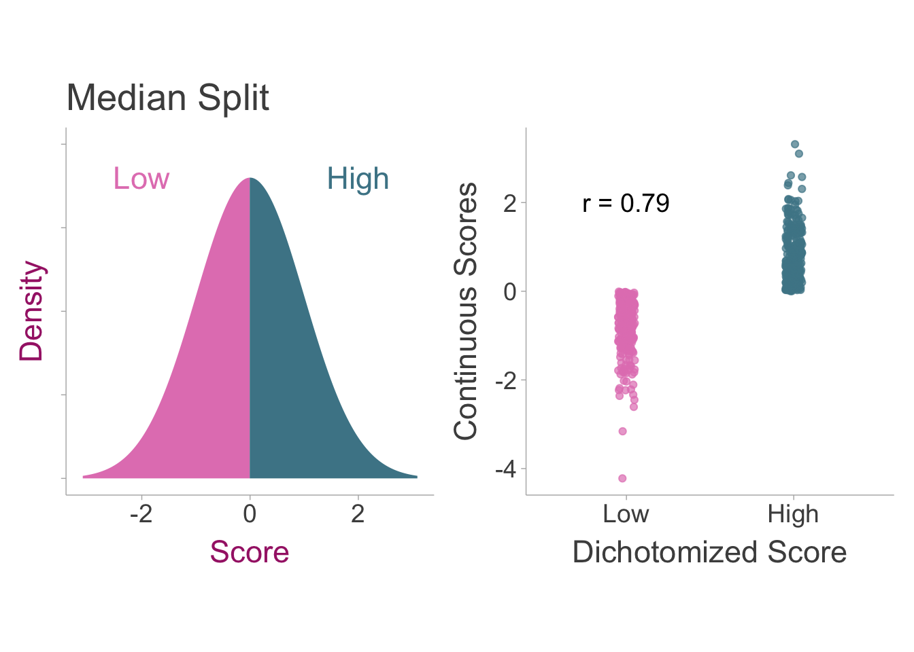

7 Artificial Dichotomization
7.1 Introduction
Primary studies sometimes will splitting naturally continuous variables into two discrete groups to increase interpretability or conduct specific analyses (e.g., t-tests). However, artificially dichotomizing variables introduces measurement error variance thus attenuating effect size estimates Maxwell and Delaney (1993). Clinical disorder diagnoses, such as generalized anxiety disorder, are examples of dichotomization where individuals are separated into either having the disorder or not even though individual differences in anxiety exist as a continuum.
7.2 Artificial Dichotomization Induced Measurement Error
Variables that are dichotomized contain measurement error. This can be demonstrated by the simple fact that dichotomized scores are not perfectly correlated with continuous scores. To demonstrate this, we can draw a sample of scores and then split the data into high and low scorers and then find the correlation coefficient between the two (see figure below). It becomes apparent that the dichotomized scores leave a lot of the variation in scores unaccounted for.
Even with a perfectly reliable measure, dichotomization will introduce measurement error variance. We can define naturally continuous scores (\(\ddagger\)) that have been artificially dichotomized as, \[ x_\ddagger= \begin{cases} 1,& \text{if } x>C_x\\ 0,& \text{if } x<C_x \end{cases} \]
Where \(C_x\) is the cut-score on the standard normal distribution. The reliability can be defined as the correlation between dichotomized scores and the underlying continuous scores (\(r_{x_\ddagger x}\)).
7.3 Correcting Correlations for Artificial Dichotomization
7.3.1 Defining our estimand
Ultimately, we would like to know the correlation coefficient between two naturally continuous variables. Sticking with our notation for true scores, our estimand can be defined as the population correlation between continuous observed scores of the independent (\(x\)) and dependent variable (\(y\)), \(\rho_{xy}\). Where dichotomized scores can be defined as,
\[ x_\ddagger= \begin{cases} 1,& \text{if } x>C_x\\ 0,& \text{if } x<C_x \end{cases} \]
\[ y_\ddagger= \begin{cases} 1,& \text{if } y>C_y\\ 0,& \text{if } y<C_y \end{cases} \]
Where \(C_y\) is the cut-score where the split took place. There are two cases of dichotomization that may occur in a given study: the univariate case where only one variable (either dependent or independent) is dichotomized and the bivariate case where both variables are dichotomized. Both of these situations will be addressed in the next section.
7.3.2 Artifact Correction for Correlations
The Univariate Case
In the simplest case of dichotomization, only one variable is dichotomized and the other is left continuous. In this case, a Pearson product-moment correlation is equivalent to the point-biserial correlation coefficient, however for dichotomized data, the biserial correlation is a relatively unbiased estimate of the pearson correlation on the underlying continuous data (assuming normality). Therefore in the population, the observed correlation \(\rho_{x_\ddagger y}\) is biased by some attenuation factor \(a\),
\[ \rho_{x_\ddagger y} = a\rho_{xy} \]
The first step in estimating the attenuation of the correlation is to first identify the cut-point, \(C_x\), of standard normal distribution where the split of the data occurred. This can be calculated by first obtaining the percent of the of the individuals in the low or high scoring group:
\[ p_x = \frac{ n_{\text{high}} }{n_{\text{high}} + n_{\text{low}}} \] or
\[ p_x = \frac{ n_{\text{low}} }{n_{\text{high}} + n_{\text{low}}}. \]
Then we can use the quantile function (\(\phi^{-1}\); i.e., the inverse of the cumulative density of the standard normal distribution) to obtain the cut-point on the standard normal distribution,
\[ C_x = \phi^{-1}(p_x) \]
Using the cut-point and the proportion of group membership in either the low or high scoring group (\(p_x\)), the attenuation factor can be defined as (Hunter and Schmidt 1990),
\[ a =\frac{\varphi(C_x)}{\sqrt{p_x(1-p_x)}} \]
Where \(\varphi\) is the normal ordinate function (i.e., probability density function of a standard normal distribution). Since a standard normal distribution is symmetric, the sign of \(C_x\) does not matter. In the case of a median split, where the cut-point would be placed at zero of a standard normal (splitting the distribution in equal halves), the attenuation factor would simplify to \(a =\frac{\varphi(0)}{\sqrt{.5(.5)}}\) \(=\frac{2}{\sqrt{2\pi}}\). To correct the pearson correlation when one of the variables is dichotomized, we can divide the observed correlation by the attenuation factor such that, \(r_c = \frac{r_{x_Dy}}{a}\). Therefore the full correction equation is,
\[ r_c = \frac{r_{x_\ddagger y}}{\left[\frac{\varphi(C_x)}{\sqrt{p_x(1-p_x)}} \right]} \tag{7.1}\]
Where the sampling variance of the corrected correlation must also be adjusted using the compound attenuation factor,
\[ \sigma^2_{\varepsilon_c} =\frac{\sigma^2_{\varepsilon_o}} {a^2} =\frac{\sigma^2_{\varepsilon_o}} {\left[\frac{\varphi(C_x)^2}{p_x(1-p_x)} \right]} \]
The Bivariate Case
In some cases, both independent and dependent variables are dichotomized inducing measurement error in both variables. A pearson correlation calculated on these two dichotomized variables would be equal to the phi coefficient and we can denote it with our notation for dichotomized variables, \(r_{x_\ddagger y_\ddagger}\) The data can be structured in a contingency table:
| \(x_\ddagger=\text{Low}\) | \(x_\ddagger=\text{High}\) | |
|---|---|---|
| \(y_\ddagger=\text{Low}\) | \(n_{LL}\) | \(n_{HL}\) |
| \(y_\ddagger=\text{High}\) | \(n_{LH}\) | \(n_{HH}\) |
We can also show how this contingency table would relate to a bivariate normal distribution

The proper correction is to calculate the tetrachoric correlation coefficient. The tetrachoric correlation is specifically meant for dichotomous scores that represent continuous underlying normal distribution. To calculate the tetrachoric correlation coefficient, the contingency table must be available. To estimate the correlation of continuous variables (\(r_{xy}\)) we can approximate the tetrachoric correlation with the following formulation,
\[ r_c = \text{cos}\left(\frac{\pi}{1+\sqrt{\frac{n_{HH}n_{LL}}{n_{HL}n_{LH}}}}\right) \tag{7.2}\]
If the contingency table is not provided, but the odds ratio (\(OR=\frac{n_{HH}n_{LL}}{n_{HL}n_{LH}}\)) is, then we can calculate \(r_{xy}\) in terms of the odds ratio,
\[ r_c = \text{cos}\left(\frac{\pi}{1+\sqrt{OR}}\right) \]
The sampling variance must be calculated from the contingency table as well. A sampling variance approximation can be obtained from Pearson (1913), however due to the complexity of the formulation and because it is simply an approximation, instead I recommend that researchers use a bootstrap procedure to obtain approximate confidence intervals. To do this, we must resample the contingency table (>10,000 iterations), calculating the tetrachoric correlation using Equation eq-tet upon each iteration. Once you obtain a tetrachoric correlation from each iteration, the standard deviation of all correlations can be used as an estimate of the standard error and the square of the standard error is the sampling variance.
Unfortunately, studies may not report the full contingency table. Instead they may report summary statistics like a chi-squared value or a phi coefficient (i.e., the pearson correlation on binary variables). If the \(\chi^2\)-statistic is reported, we can first convert that to a phi coefficient by using,
\[ r_{x_\ddagger y_\ddagger} = \sqrt{\frac{\chi^2}{n}} \]
Where \(n\) is the total sample size. From the phi coefficient, we can estimate the correlation of the continuous variables with a formula similar to Equation eq-dich-r,
\[ r_c = \frac{r_{x_\ddagger y_\ddagger}}{\left[\frac{\varphi(C_x)}{\sqrt{p_x(1-p_x)}} \right]\left[\frac{\varphi(C_y)}{\sqrt{p_y(1-p_y)}} \right]} \tag{7.3}\]
This formula was introduced by Hunter and Schmidt (1990) and is a rough approximation of the correlation between the continuous independent and dependent variables (\(r_{xy}\)). The corresponding sampling variance of the corrected correlation coefficient is,
\[ \sigma^2_{\varepsilon_c} =\frac{\sigma^2_{\varepsilon_o}} {a^2} =\frac{\sigma^2_{\varepsilon_o}} {\left[\frac{\varphi(C_x)^2}{p_x(1-p_x)} \right]\left[\frac{\varphi(C_y)^2}{p_y(1-p_y)} \right]}. \]
7.3.3 Correcting Correlations for Dichotomization in R
To correct correlations for dichotomization in R, we can use the correct_r_dich in the psychmeta package.
# load packages
# install.packages('psychmeta')
library(psychmeta)----------------------------------------------------- psychmeta version 2.6.5 --
Please report any bugs to github.com/psychmeta/psychmeta/issues
or issues@psychmeta.com
We work hard to produce these open-source tools for the R community.
Please cite psychmeta when you use it in your research:
Dahlke, J. A., & Wiernik, B. M. (2019). psychmeta: An R package for
psychometric meta-analysis. Applied Psychological Measurement, 43(5), 415-416.
https://doi.org/10.1177/0146621618795933
--------------------------------------------------------------- Version check --✔ Yay! Your copy of psychmeta is up to date!# define parameters
r <- .5 # the observed correlation
p <- .4 # proportion of people in group A or B
px <- .6 # probability of subjects above or below the split in x
py <- .7 # probability of subjects above or below the split in y
n <- 100
var_e_o <- (1 - r^2)^2 / (n-1)
# get cut-point
correct_r_dich(r,px=px,py=py,n=n) r_corrected var_e_corrected n_adj
1 0.8356363 0.01587018 6.735923\[ var_{e}=\frac{(1-r^{2})^{2}}{n-1} \]
We can also correct the correlation using base R. In order to correct for dichotomization, we can use the three step process equations from sec-corr-smd.
# get cut-point
Cy <- qnorm(py)
Cx <- qnorm(px)
# calculate attenuation factors
a_x <- dnorm(Cx)/sqrt(px*(1-px)) # attenuation factor for dichotomization in x
a_y <- dnorm(Cy)/sqrt(py*(1-py)) # attenuation factor for dichotomization in y
# correct r
rc <- r / (a_x*a_y)
# adjust standard error for rc
var_e_c <- var_e_o * (rc/r)^2
# print results
print(paste0('r = ',round(rc,3),', var = ',round(var_e_c,3)))[1] "r = 0.836, var = 0.016"7.4 Correcting Standardized Mean Differences for Artificial Dichotomization
7.4.1 Defining our estimand
We would like to know the group difference between scores of a naturally continuous variable. Our estimand can thus be defined as the population standardized mean difference between groups \(A\) and \(B\) on continuous scores of the dependent variable (\(y\)), \(\delta_{y}\). Where dichotomized scores can be defined as
\[ y_{A\ddagger}= \begin{cases} 1,& \text{if } y_A>C_y\\ 0,& \text{if } y_A<C_y \end{cases} \]
\[ y_{B\ddagger}= \begin{cases} 1,& \text{if } y_B>C_y\\ 0,& \text{if } y_B<C_y \end{cases} \]
In studies of group differences, since the independent variable is already dichotomous, the only dichotomization that can occur is on the dependent variable.
7.4.2 Artifact Correction for Standardized Mean Differences
The simplest way to correct for dichotomization in a standardized mean difference is to first convert the observed \(d\) value of the dichotomized dependent variable and the dichotomous independent variable (i.e., the grouping variable). When converting to a correlation coefficient, it’s important to note the binary nature of both variables, leading us to estimate the phi coefficient rather than the point-biserial correlation that we would be estimating if the dependent variable was continuous. To calculate the phi coefficient from a \(d\) value we can use the proportion of group membership in group \(A\) or group \(B\) (\(p\); it does not matter which one is chosen, as long as it is consistent for every instance of \(p\)),
\[ r_{\text{phi}} = \frac{d_{y_\ddagger}}{\sqrt{d_{y_\ddagger}^2+\frac{1}{p(1-p)}}} \] We can then correct the phi coefficient similar to how we correct the point-biserial correlation in sec-corr-artifacts,
\[ r_c = \frac{r_{\text{phi}}}{\left[\frac{\varphi(C_y)}{\sqrt{p_y (1-p_y)}}\right]}. \] Then we can convert the corrected correlation back into a standardized mean difference, \[ d_c = \frac{r_c}{\sqrt{p\left(1-p\right)\left(1-r_c^2\right)}} \] Where \(d_c\) is our corrected correlation. The sampling variance must also be corrected using the same three step procedure. For simplicity, we will consolidate this into one formula,
\[ \sigma^2_{\varepsilon_c} = \frac {\sigma^2_{\varepsilon_o} \left(\frac{r_c}{r_\text{phi}}\right)^2} {\left(1+d_{y_\ddagger}^2p[1-p]\right)^3(1-r_c^2)^3} \]
7.4.3 Correcting d values for Dichotomization in R
To correct standardized mean differences for dichotomization in R. At the moment the psychmeta package does not have a correct_d_dich function. In order to correct for dichotomization, we can use the three step process equations from sec-corr-smd.
# define parameters
d = .5 # observed standardized mean difference
nA = 40 # sample size for group A
nB = 60 # sample size for group A
n = nA+nB # calculate total sample size
p = nA / n # calculate proportion of individuals in group A
py = .7 # probability of subjects above or below the split
var_e_o = ((n - 1) / (n - 3)) * (n / (nA * nB) + d^2 / (2 * n))
# get cut-point
Cy = qnorm(py)
# calculate attenuation factor of y
a_y <- dnorm(Cy)/sqrt(py*(1-py)) # attenuation factor for dichotomization in y
# convert d to r
r <- d / sqrt(d^2 + (1 / (p*(1-p))))
# correct r
rc <- r / a_y
# convert r to d
dc <- rc / sqrt(p*(1-p)*(1-rc^2))
# correct sampling variance
var_e_c <- (var_e_o * (rc/r)^2) / ((1+d^2*p*(1-p))^3 * (1-rc^2)^3)
# print results
print(paste0('r = ',round(dc,3),', var = ',round(var_e_c,3) ))[1] "r = 0.674, var = 0.087"(Russell, Pinto, and Bobko 1991)
(Royston, Altman, and Sauerbrei 2006)
Bonett, Douglas G., and Robert M. Price. 2005. “Inferential Methods for the Tetrachoric Correlation Coefficient.” Journal of Educational and Behavioral Statistics 30 (2): 213–25. https://www.jstor.org/stable/3701350.
Digby, P. G. N. 1983. “Approximating the Tetrachoric Correlation Coefficient.” Biometrics 39 (3): 753–57. https://doi.org/10.2307/2531104.
Hunter, John, and Frank Schmidt. 1990. “Dichotomization of Continuous Variables: The Implications for Meta-Analysis.” Journal of Applied Psychology 75 (June): 334–49. https://doi.org/10.1037/0021-9010.75.3.334.
MacCallum, Robert C., Shaobo Zhang, Kristopher J. Preacher, and Derek D. Rucker. 2002. “On the Practice of Dichotomization of Quantitative Variables.” Psychological Methods 7: 19–40. https://doi.org/10.1037/1082-989X.7.1.19.
Maxwell, Scott, and Harold Delaney. 1993. “Bivariate Median Splits and Spurious Statistical Significance.” Psychological Bulletin 113 (January): 181–90. https://doi.org/10.1037/0033-2909.113.1.181.
Muthén, Bengt, and Charles Hofacker. 1988. “Testing the Assumptions Underlying Tetrachoric Correlations.” Psychometrika 53 (4): 563–77. https://doi.org/10.1007/BF02294408.
Naggara, O., J. Raymond, F. Guilbert, D. Roy, A. Weill, and D. G. Altman. 2011. “Analysis by Categorizing or Dichotomizing Continuous Variables Is Inadvisable: An Example from the Natural History of Unruptured Aneurysms.” American Journal of Neuroradiology 32 (3): 437–40. https://doi.org/10.3174/ajnr.A2425.
Pearson, Karl. 1913. “On the Probable Error of a Coefficient of Correlation as Found from a Fourfold Table.” Biometrika 9 (1/2): 22–33. https://doi.org/10.2307/2331798.
Peters, Charles C., and Walter R. Van Voorhis. 1940. “Further Methods of Correlation.” In, 362–403. New York, NY, US: McGraw-Hill Book Company. https://doi.org/10.1037/13596-013.
Royston, Patrick, Douglas G. Altman, and Willi Sauerbrei. 2006. “Dichotomizing Continuous Predictors in Multiple Regression: A Bad Idea.” Statistics in Medicine 25 (1): 127–41. https://doi.org/10.1002/sim.2331.
Russell, Craig J., Jeffrey K. Pinto, and Philip Bobko. 1991. “Appropriate Moderated Regression and Inappropriate Research Strategy: A Demonstration of Information Loss Due to Scale Coarseness” 15 (3): 257–66. https://doi.org/10.1177/014662169101500305.
Ulrich, Rolf, and Markus Wirtz. 2004. “On the Correlation of a Naturally and an Artificially Dichotomized Variable.” British Journal of Mathematical and Statistical Psychology 57 (2): 235–51. https://doi.org/10.1348/0007110042307203.
Vargha, András, Tamás Rudas, Harold D. Delaney, and Scott E. Maxwell. 1996. “Dichotomization, Partial Correlation, and Conditional Independence.” Journal of Educational and Behavioral Statistics 21 (3): 264–82. https://doi.org/10.2307/1165272.